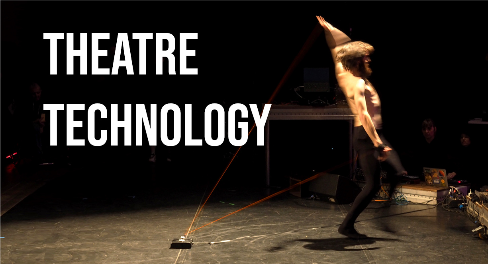

"Dear mum, I've decided to become a performance artist"
"Okay dear...but have you thought about this..."
Thomas Mayer, Performance Artist interrogates the intersection between theatre and technology, asking "why doesn't anybody care?" All while battling the concerned voice of his mother.
A tongue in cheek, multimedia performance for CTM Festival 2020, Berlin. Devised by Sasha Smirnova, Radhapriya Gupta and Thomas Mayer.